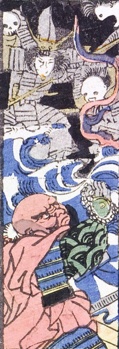

海に現れた4体の化物。中央の2体は甲冑を身につけている。化物の顔は髑髏である。対峙する人物は数珠を持ち祈祷しているようである。
著作者：一恵斎芳幾（歌川芳幾）／出典：親書誌：U426_nichibunken_0142：新板化物づくし；シンパンバケモノヅクシ／日付：2009／資源識別子：U426_nichibunken_0142_0017_0000
Copyright (c)2010- International Research Center for Japanese Studies, Kyoto, Japan. All rights reserved.